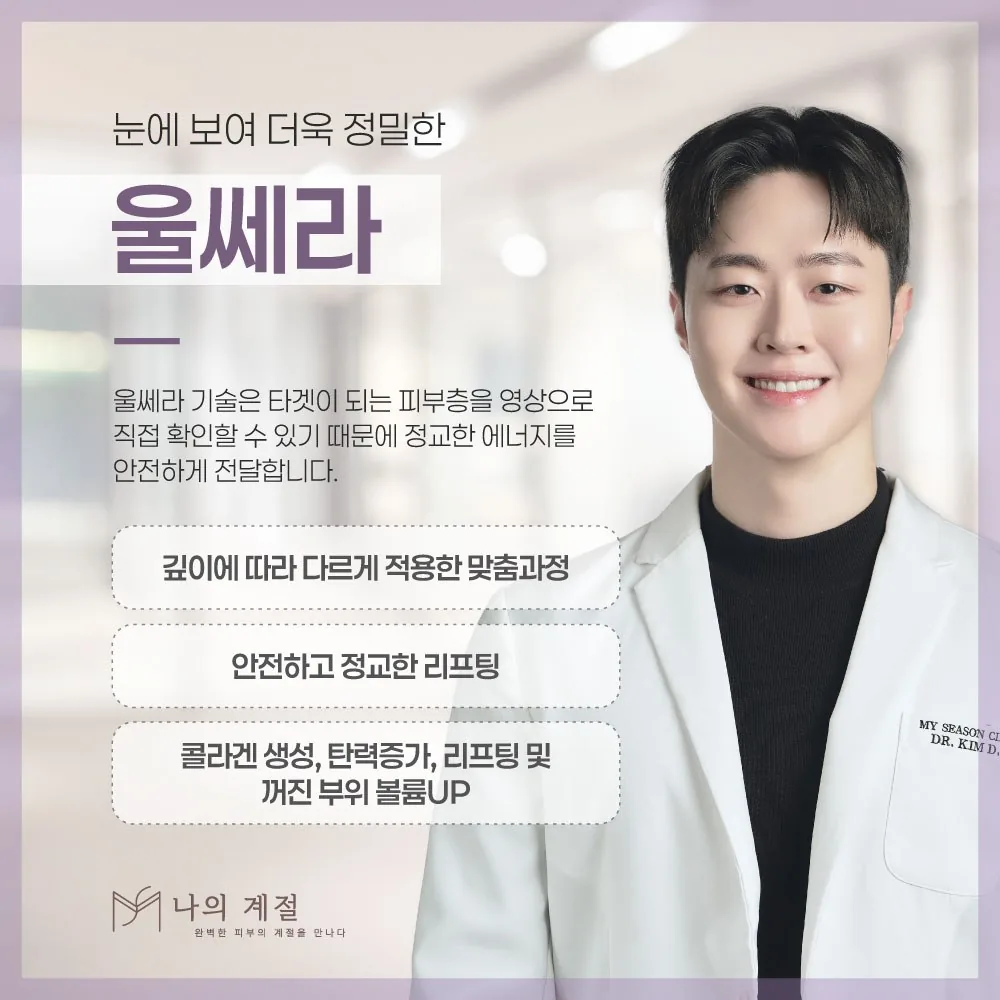

울산울쎄라 후 변화가 보이는 시점과 재시술을 정하는 기준

울쎄라피 프라임의 변화는 당일이 아니라 수주에서 수개월에 걸쳐 나타나는 것으로 안내됩니다. 초기 반응과 경과 평가를 나누고, 반복 시술을 정하는 기준을 정리했습니다.
당일의 당김은 최종 결과가 아닙니다
시술 직후에는 열에 의한 조직 반응과 부기로 당기는 느낌이 들 수 있습니다. 이 느낌은 며칠 안에 가라앉는 경우가 많고, 콜라겐 반응에 따른 변화는 수주에서 수개월에 걸쳐 서서히 나타나는 것으로 안내됩니다. 당일 모습으로 결과를 판단하거나 바로 추가 시술을 결정하지 않습니다.
중요한 촬영이나 행사가 있다면 초기 반응이 가라앉는 시점과 변화를 평가할 시점을 나누어 계획하세요.
비교는 같은 조건의 사진으로
변화를 확인할 때는 시술 전 같은 조명·거리·각도에서 찍은 사진이 기준이 됩니다. 셀카의 렌즈 거리, 조명 방향, 표정에 따라 얼굴선이 다르게 보이므로, 기억이나 다른 조건의 사진으로 판단하면 변화를 과대·과소평가하기 쉽습니다.
반복 시술은 간격이 아니라 평가로 정합니다
“몇 개월마다”라는 고정된 반복 주기는 모든 사람에게 적용되지 않습니다. 남아 있는 변화, 피부 상태의 변동, 이전 시술에서의 반응을 평가한 뒤 추가 여부와 범위를 정합니다. 결과와 유지 기간을 같은 숫자로 약속하는 설명은 신중하게 받아들이고, 다른 시술과의 병행은 각각의 목적과 순서를 따로 확인하세요.
상담 전 확인할 내용
- 시술 전 같은 조명·각도로 찍은 정면·측면 사진
- 안내받은 경과 확인 시점과 그때까지 관찰할 변화
- 추가·병행 시술을 결정하기 전에 확인할 현재 상태와 이전 반응
위험과 주의사항
시술 후 붉어짐, 부기, 멍, 압통, 일시적인 감각 저하가 생길 수 있습니다. 드물게 피부 표면의 선 모양 자국, 화상, 신경과 관련된 일시적인 근육 약화가 보고됩니다. 통증이 심하거나 오래가고 피부 손상이 보이면 병원에 연락해 진료가 필요한지 확인하세요.
본 글은 상담 준비를 위한 일반 정보입니다. 국내 사용 제품·장비와 허가사항, 개인별 적용 여부와 회복은 의료진의 진료를 통해 확인하세요.
울산울쎄라 시술별 적용 여부와 주의사항 더 보기 ↗카테고리 울쎄라피 프라임